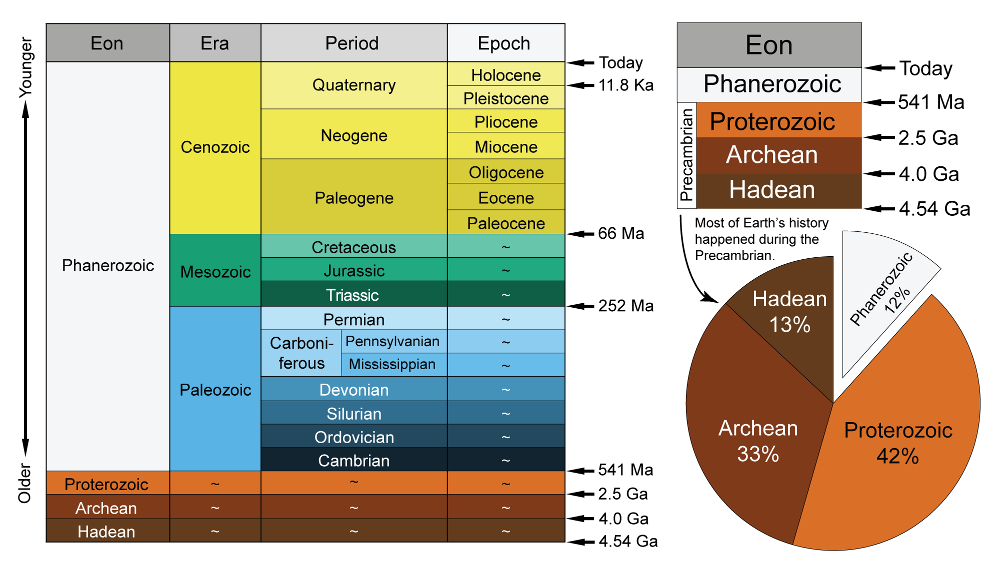

Click the search bar to proceed!
This is the Geological Time Scale.
The Geological Time Scale, a "calendar" for Earth's history, is a human-made division of time used to organize geologic time and correlate geologic events globally. This timeline, which is arranged with the oldest at the bottom and the youngest at the top, aids in our navigation of all historical geological occurrences. However, the primary method of creating a geologic time scale is through the fossil forms found in rocks; the emergence and extinction of common species from the fossil record is used to mark the start and finish of ages, epochs, periods, and other time intervals.